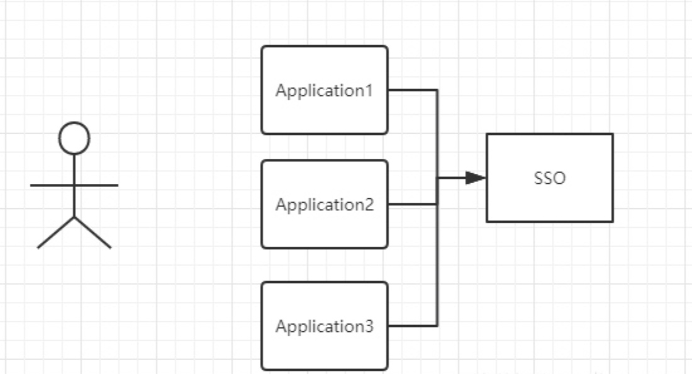
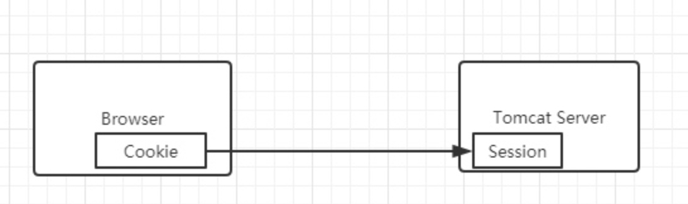
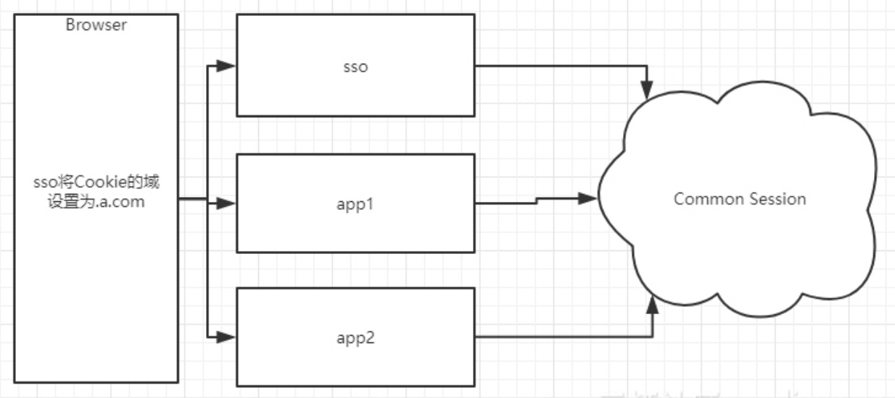
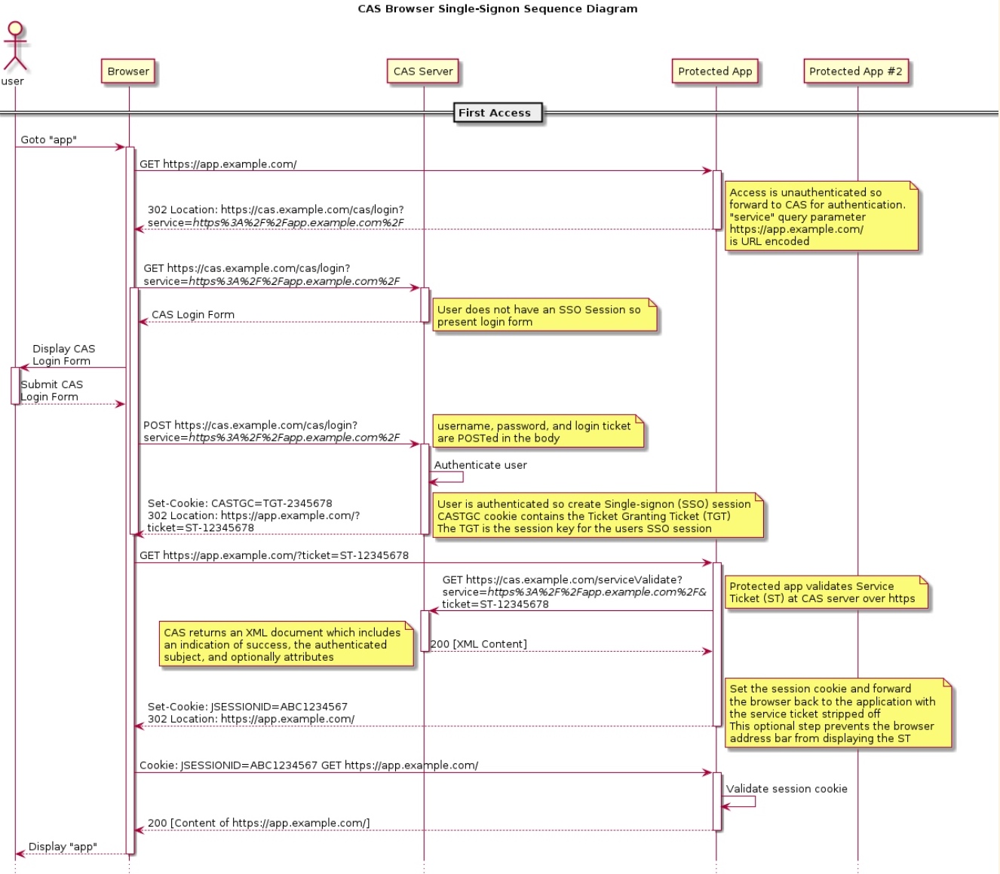
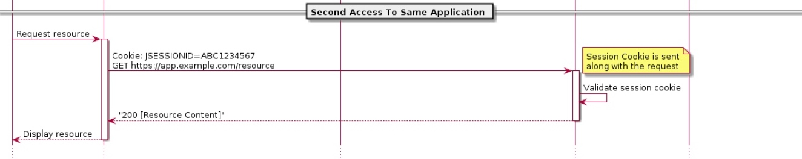
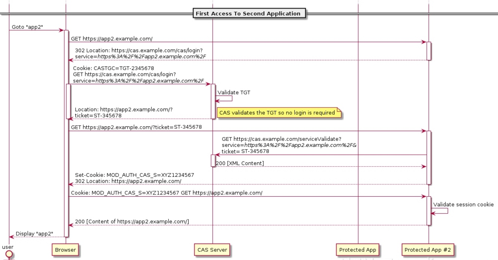

单点登录（SSO）
背景 在企业发展初期，企业使用的系统很少，通常一个或者两个，每个系统都有自己的登录模块，运营人员每天用自己的账号登录，很方便。但随着企业的发展，用到的系统随之增多，运营人员在操作不同的系统时，需要多次登录，而且每个系统的账号都不一样，这对于运营人员来说，很不方便。
背景
在企业发展初期，企业使用的系统很少，通常一个或者两个，每个系统都有自己的登录模块，运营人员每天用自己的账号登录，很方便。
但随着企业的发展，用到的系统随之增多，运营人员在操作不同的系统时，需要多次登录，而且每个系统的账号都不一样，这对于运营人员
来说，很不方便。于是，就想到是不是可以在一个系统登录，其他系统就不用登录了呢？这就是单点登录要解决的问题。
单点登录英文全称Single Sign On，简称就是SSO。它的解释是：在多个应用系统中，只需要登录一次，就可以访问其他相互信任的应用系统。

如图所示，图中有4个系统，分别是Application1、Application2、Application3、和SSO。Application1、Application2、Application3没有登录模块，而SSO只有登录模块，没有其他的业务模块，当Application1、Application2、Application3需要登录时，将跳到SSO系统，SSO系统完成登录，其他的应用系统也就随之登录了。这完全符合我们对单点登录（SSO）的定义。
技术实现
在说单点登录（SSO）的技术实现之前，我们先说一说普通的登录认证机制。

如上图所示，我们在浏览器（Browser）中访问一个应用，这个应用需要登录，我们填写完用户名和密码后，完成登录认证。这时，我们在这个用户的session中标记登录状态为yes（已登录），同时在浏览器（Browser）中写入Cookie，这个Cookie是这个用户的唯一标识。下次我们再访问这个应用的时候，请求中会带上这个Cookie，服务端会根据这个Cookie找到对应的session，通过session来判断这个用户是否登录。如果不做特殊配置，这个Cookie的名字叫做jsessionid，值在服务端（server）是唯一的。
同域下的单点登录
一个企业一般情况下只有一个域名，通过二级域名区分不同的系统。比如我们有个域名叫做：a.com，同时有两个业务系统分别为：app1.a.com和app2.a.com。我们要做单点登录（SSO），需要一个登录系统，叫做：sso.a.com。
我们只要在sso.a.com登录，app1.a.com和app2.a.com就也登录了。通过上面的登陆认证机制，我们可以知道，在sso.a.com中登录了，其实是在sso.a.com的服务端的session中记录了登录状态，同时在浏览器端（Browser）的sso.a.com下写入了Cookie。那么我们怎么才能让app1.a.com和app2.a.com登录呢？这里有两个问题：
Cookie是不能跨域的，我们Cookie的domain属性是sso.a.com，在给app1.a.com和app2.a.com发送请求是带不上的。sso、app1和app2是不同的应用，它们的session存在自己的应用内，是不共享的。

那么我们如何解决这两个问题呢？针对第一个问题，sso登录以后，可以将Cookie的域设置为顶域，即.a.com，这样所有子域的系统都可以访问到顶域的Cookie。我们在设置Cookie时，只能设置顶域和自己的域，不能设置其他的域。比如：我们不能在自己的系统中给baidu.com的域设置Cookie。
Cookie的问题解决了，我们再来看看session的问题。我们在sso系统登录了，这时再访问app1，Cookie也带到了app1的服务端（Server），app1的服务端怎么找到这个Cookie对应的Session呢？这里就要把3个系统的Session共享，如图所示。共享Session的解决方案有很多，例如：Spring-Session。这样第2个问题也解决了。
同域下的单点登录就实现了，但这还不是真正的单点登录。
不同域下的单点登录
同域下的单点登录是巧用了Cookie顶域的特性。如果是不同域呢？不同域之间Cookie是不共享的，怎么办？
这里我们就要说一说CAS流程了，这个流程是单点登录的标准流程。
cas_flow_diagram



上图是CAS官网上的标准流程，具体流程如下：
- 用户访问app系统，app系统是需要登录的，但用户现在没有登录。
- 跳转到CAS server，即SSO登录系统，以后图中的CAS Server我们统一叫做SSO系统。 SSO系统也没有登录，弹出用户登录页。
- 用户填写用户名、密码，SSO系统进行认证后，将登录状态写入SSO的session，浏览器（Browser）中写入SSO域下的Cookie。
- SSO系统登录完成后会生成一个ST（Service Ticket），然后跳转到app系统，同时将ST作为参数传递给app系统。
- app系统拿到ST后，从后台向SSO发送请求，验证ST是否有效。
- 验证通过后，app系统将登录状态写入session并设置app域下的Cookie。
至此，跨域单点登录就完成了。以后我们再访问app系统时，app就是登录的。接下来，我们再看看访问app2系统时的流程。
- 用户访问app2系统，app2系统没有登录，跳转到SSO。
- 由于SSO已经登录了，不需要重新登录认证。
- SSO生成ST，浏览器跳转到app2系统，并将ST作为参数传递给app2。
- app2拿到ST，后台访问SSO，验证ST是否有效。
- 验证成功后，app2将登录状态写入session，并在app2域下写入Cookie。
这样，app2系统不需要走登录流程，就已经是登录了。SSO，app和app2在不同的域，它们之间的session不共享也是没问题的。
有的同学问我，SSO系统登录后，跳回原业务系统时，带了个参数ST，业务系统还要拿ST再次访问SSO进行验证，觉得这个步骤有点多余。他想SSO登录认证通过后，通过回调地址将用户信息返回给原业务系统，原业务系统直接设置登录状态，这样流程简单，也完成了登录，不是很好吗？
其实这样问题时很严重的，如果我在SSO没有登录，而是直接在浏览器中敲入回调的地址，并带上伪造的用户信息，是不是业务系统也认为登录了呢？这是很可怕的。
###总结
单点登录（SSO）的所有流程都介绍完了，原理大家都清楚了。总结一下单点登录要做的事情：
- 单点登录（SSO系统）是保障各业务系统的用户资源的安全 。
- 各个业务系统获得的信息是，这个用户能不能访问我的资源。
- 单点登录，资源都在各个业务系统这边，不在SSO那一方。 用户在给SSO服务器提供了用户名密码后，作为业务系统并不知道这件事。 SSO随便给业务系统一个ST，那么业务系统是不能确定这个ST是用户伪造的，还是真的有效，所以要拿着这个ST去SSO服务器再问一下，这个用户给我的ST是否有效，是有效的我才能让这个用户访问。